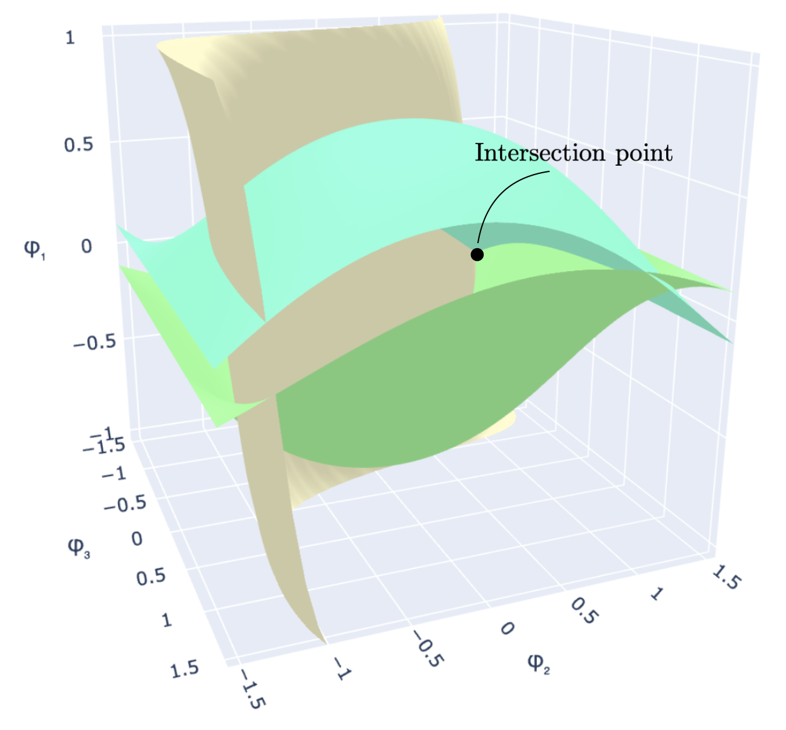
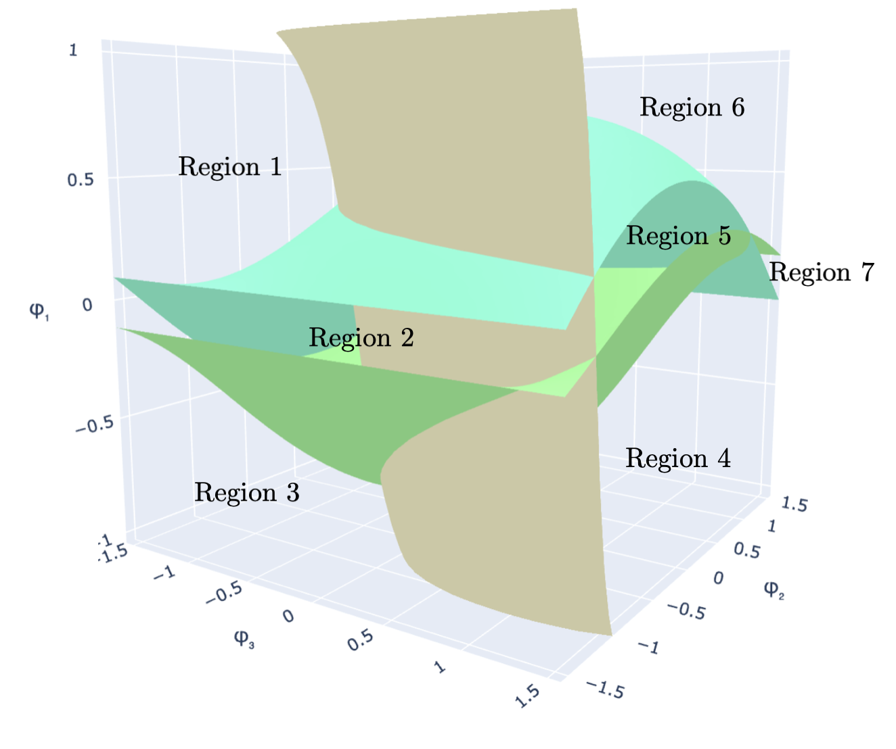
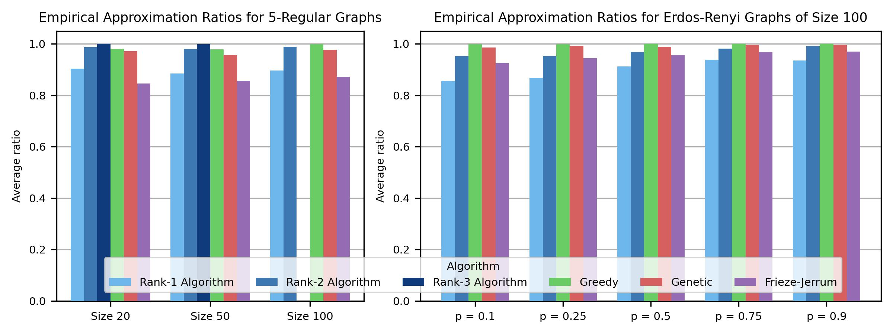

| Ria Stevens | Fangshuo Liao | Barbara Su | Jianqiang Li | Anastasios Kyrillidis |
| Computer Science Department, Rice University |
| Code [GitHub] | Paper [arXiv] |
We tackle the Max-3-Cut problem through the lens of maximizing complex-valued quadratic forms and show that low-rank structure in the objective matrix can be exploited to build algorithms that are faster and more parallelizable than classical semidefinite programming (SDP) relaxations. We propose algorithms for maximizing these quadratic forms over a domain of size \(K\) that enumerate and evaluate a set of \(\mathcal{O}(n^{2r-1})\) candidate solutions, where \(n\) is the number of graph nodes and \(r\) is the rank of a low-rank approximation of the objective. When \(K=3\) and the objective is exactly low-rank, our candidate set is guaranteed to contain the exact maximizer. For approximately low-rank objectives, we prove multiplicative approximation guarantees that degrade gracefully with the perturbation magnitude. Experimentally, our Rank-1 algorithm achieves up to a 74× speedup over heuristic methods while preserving solution quality on structured graph instances, and scales to graphs with tens of thousands of nodes.
Partitioning a network into groups to maximize cross-group connections arises everywhere: circuit layout, social network analysis, clustering, and even quantum computing benchmarks. Max-3-Cut—splitting a graph's vertices into three sets to maximize cut edges—is NP-hard, and the best-known polynomial-time approximation ratio of 0.836 comes from semidefinite programming (SDP). SDP solvers are expensive (at least \(\mathcal{O}(n^{3.5})\)) and more importantly hard to parallelize, while heuristic methods like genetic algorithms lack provable guarantees.
Our key insight is simple: for Max-K-Cut, the objective \(z^\dagger L z\) is dominated by the top eigenvalues of the Laplacian. On graphs with concentrated spectra—torus lattices, regular graphs, and networks with clear community structure—the top 2–3 eigenvalues capture enough structure to find near-optimal partitions. (Note: this is distinct from spectral clustering, which uses the bottom eigenvalues to minimize cuts. We maximize cuts, so the top eigenvalues are the relevant ones.) By projecting the problem onto a low-rank approximation of the Laplacian, we convert Max-3-Cut into an exact discrete quadratic maximization that can be solved in polynomial time for fixed rank. This yields a family of algorithms—Rank-1, Rank-2, Rank-3—that trade off between speed and solution quality, are embarrassingly parallel, and come with provable approximation guarantees relative to the low-rank optimum.
The Max-\(K\)-Cut problem has a rich algorithmic landscape:
Our work is the first to exploit low-rank structure in the graph Laplacian directly, yielding exact polynomial-time algorithms for fixed rank that extend to any alphabet size \(K\).
Given a graph with Laplacian \(\mathbf{Q}^{\star} \in \mathbb{C}^{n \times n}\), we seek the assignment vector \(\mathbf{z} \in \mathcal{A}_K^n\) that maximizes the complex quadratic form:
\[ \texttt{OPT-}\mathbf{Q}^{\star} := \max_{\mathbf{z} \in \mathcal{A}_K^n} \; \mathbf{z}^{\dagger} \mathbf{Q}^{\star} \mathbf{z}, \]where \(\mathcal{A}_K = \{ e^{2\pi i k / K} : k = 0, 1, \ldots, K{-}1 \}\) are the \(K\)-th roots of unity. For \(K = 3\), this is exactly the Max-3-Cut problem: two nodes in the same partition contribute 0 to the objective, while nodes in different partitions contribute \(\frac{3}{2} w_{ij}\). When \(\mathbf{Q}^{\star}\) has rank \(r \ll n\), we decompose it as \(\mathbf{Q}^{\star} = \mathbf{V}\mathbf{V}^{\dagger}\) and work directly with the \(n \times r\) factor \(\mathbf{V}\).
The core idea is to reformulate the discrete maximization as a double optimization over an auxiliary angular parameter that scans a continuous space. As this parameter sweeps through a hypercube, the optimal assignment for each node changes only at specific decision boundaries—hypersurfaces in the parameter space. These hypersurfaces partition the search space into cells, each corresponding to a distinct candidate cut. Instead of searching over all \(K^n\) possible assignments, we only need to visit the vertices of this partition.
 |
 |
Left: Three decision-boundary hypersurfaces in the auxiliary parameter space \((\varphi_1, \varphi_2, \varphi_3)\) for rank \(r=2\). Their intersection defines a vertex of the cell partition. Right: The same arrangement with seven labeled regions; each region maps to a distinct candidate assignment vector.
Our algorithms work in three stages:
Crucially, the candidate enumeration and evaluation steps are embarrassingly parallel: each vertex can be processed independently, making the algorithm well-suited for GPU acceleration and distributed computing.
We establish three types of guarantees:
where \(\lambda_j^{\star}\) are the eigenvalues of \(\mathbf{Q}^{\star}\) and \(\delta^{\star}\) is the eigengap. The first term is the price of truncating to rank \(r\); the second captures the effect of noise.
This shows that when the noise is small relative to the spectral gap, the low-rank algorithm recovers a near-optimal cut.
We evaluate our algorithms on synthetic random graphs and the GSet benchmark, comparing against Frieze–Jerrum (SDP), Greedy, and Genetic baselines.

Empirical approximation ratios on 5-regular graphs (left) and Erdős–Rényi graphs with \(n=100\) (right). Our Rank-3 algorithm achieves the highest average ratio on small graphs; Rank-2 matches or exceeds Greedy across all densities.
The table below compares our Rank-1 algorithm against Greedy and MOH (a state-of-the-art heuristic) on selected GSet instances. Runtimes are in seconds.
| Instance | \(n\) | Type | Greedy | MOH | Rank-1 |
|---|---|---|---|---|---|
| G1 | 800 | Erdős–Rényi | 14859 (16s) | 15165 | 13331 (1.1s) |
| G11 | 800 | Toroidal | 619 (12s) | 669 | 426 (0.5s) |
| G14 | 800 | Skew | 3914 (12s) | 4012 | 3217 (0.6s) |
| G48 | 3,000 | Toroidal | 5998 (300s) | 6000 | 6000 (5.2s) |
| G49 | 3,000 | Toroidal | 5996 (394s) | 6000 | 6000 (5.3s) |
| G50 | 3,000 | Toroidal | 5998 (399s) | 6000 | 5934 (5.9s) |
| G67 | 10,000 | Toroidal | timeout | 8086 | 3117 (76s) |
| G81 | 20,000 | Toroidal | timeout | 16321 | 4122 (352s) |
Bold rows highlight instances where Rank-1 matches the theoretical optimum. MOH runtimes are not compared due to hardware differences. Greedy times out at 30 minutes on graphs with \(n \geq 10{,}000\).
To push the limits of our approach, we tested Rank-1 on random 3-regular graphs with 50,000 and 100,000 nodes using 800 parallel workers. On the 100,000-node graph, Rank-1 finds a cut value of 137,796 in about 17 hours, compared to 100,781 for random search. Most of the runtime is spent computing the principal eigenvector of the Laplacian.
We introduce a family of algorithms for Max-3-Cut that exploit low-rank Laplacian structure to build polynomially-sized candidate sets guaranteed to contain the exact maximizer. Our approach provides a principled middle ground between expensive SDP solvers (strong guarantees, slow) and heuristics (fast, no guarantees), and is inherently parallelizable. The Rank-1 algorithm, in particular, scales to graphs with tens of thousands of nodes while finding optimal or near-optimal cuts on structured instances.
This work was supported in part by the National Science Foundation under CAREER award no. 2145629 and a Ken Kennedy Institute award at Rice University.
@article{Stevens2025maxkcut,
title = {Exploiting Low-Rank Structure in Max-$K$-Cut Problems},
author = {Stevens, Ria and Liao, Fangshuo and Su, Barbara and Li, Jianqiang and Kyrillidis, Anastasios},
journal = {arXiv preprint arXiv:2602.20376},
year = {2025}
}